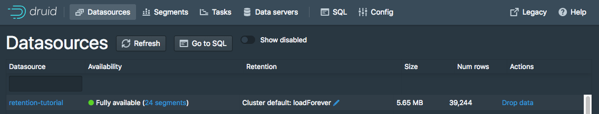
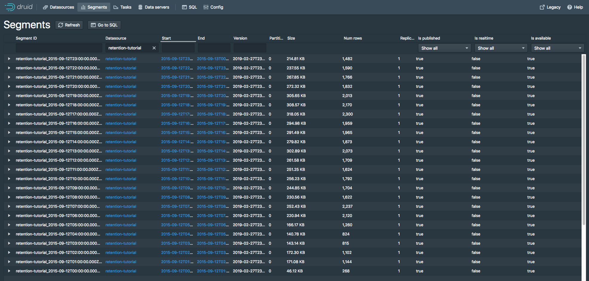
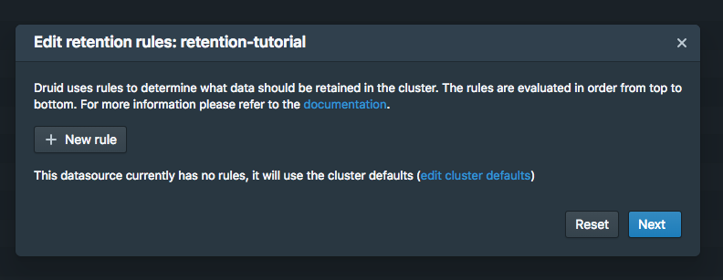
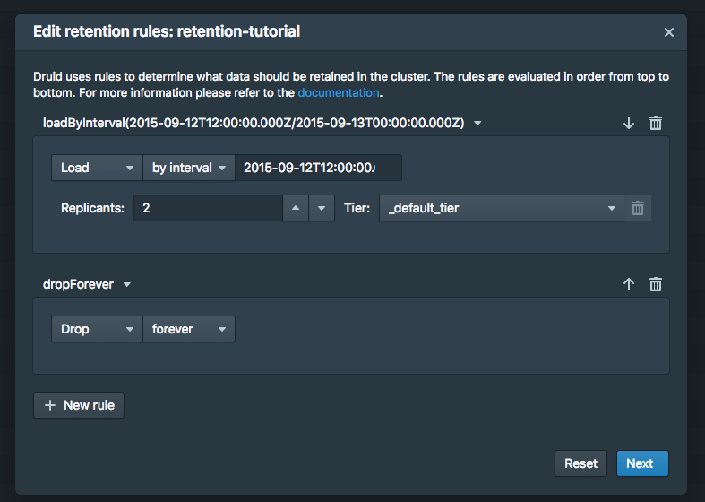
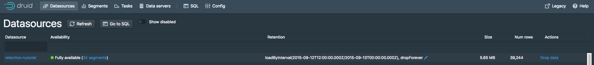
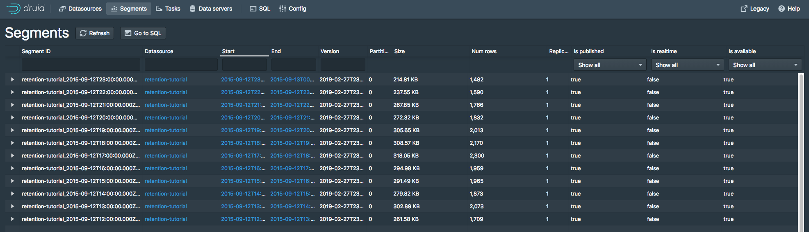

Looking for the latest stable documentation?
This tutorial demonstrates how to configure retention rules on a datasource to set the time intervals of data that will be retained or dropped.
For this tutorial, we'll assume you've already downloaded Apache Druid (incubating) as described in the single-machine quickstart and have it running on your local machine.
It will also be helpful to have finished Tutorial: Loading a file and Tutorial: Querying data.
For this tutorial, we'll be using the Wikipedia edits sample data, with an ingestion task spec that will create a separate segment for each hour in the input data.
The ingestion spec can be found at quickstart/tutorial/retention-index.json. Let's submit that spec, which will create a datasource called retention-tutorial:
bin/post-index-task --file quickstart/tutorial/retention-index.json
After the ingestion completes, go to http://localhost:8888/unified-console.html#datasources in a browser to access the Druid Console's datasource view.
This view shows the available datasources and a summary of the retention rules for each datasource:

Currently there are no rules set for the retention-tutorial datasource. Note that there are default rules for the cluster: load forever with 2 replicants in _default_tier.
This means that all data will be loaded regardless of timestamp, and each segment will be replicated to two Historical processes in the default tier.
In this tutorial, we will ignore the tiering and redundancy concepts for now.
Let's view the segments for the retention-tutorial datasource by clicking the "24 Segments" link next to "Fully Available".
The segments view (http://localhost:8888/unified-console.html#segments) provides information about what segments a datasource contains. The page shows that there are 24 segments, each one containing data for a specific hour of 2015-09-12:

Suppose we want to drop data for the first 12 hours of 2015-09-12 and keep data for the later 12 hours of 2015-09-12.
Go to the datasources view and click the blue pencil icon next to Cluster default: loadForever for the retention-tutorial datasource.
A rule configuration window will appear:

Now click the + New rule button twice.
In the upper rule box, select Load and by interval, and then enter 2015-09-12T12:00:00.000Z/2015-09-13T00:00:00.000Z in field next to by interval. Replicants can remain at 2 in the _default_tier.
In the lower rule box, select Drop and forever.
The rules should look like this:

Now click Next. The rule configuration process will ask for a user name and comment, for change logging purposes. You can enter tutorial for both.
Now click Save. You can see the new rules in the datasources view:

Give the cluster a few minutes to apply the rule change, and go to the segments view in the Druid Console. The segments for the first 12 hours of 2015-09-12 are now gone:

The resulting retention rule chain is the following:
loadByInterval 2015-09-12T12/2015-09-13 (12 hours)
dropForever
loadForever (default rule)
The rule chain is evaluated from top to bottom, with the default rule chain always added at the bottom.
The tutorial rule chain we just created loads data if it is within the specified 12 hour interval.
If data is not within the 12 hour interval, the rule chain evaluates dropForever next, which will drop any data.
The dropForever terminates the rule chain, effectively overriding the default loadForever rule, which will never be reached in this rule chain.
Note that in this tutorial we defined a load rule on a specific interval.
If instead you want to retain data based on how old it is (e.g., retain data that ranges from 3 months in the past to the present time), you would define a Period load rule instead.